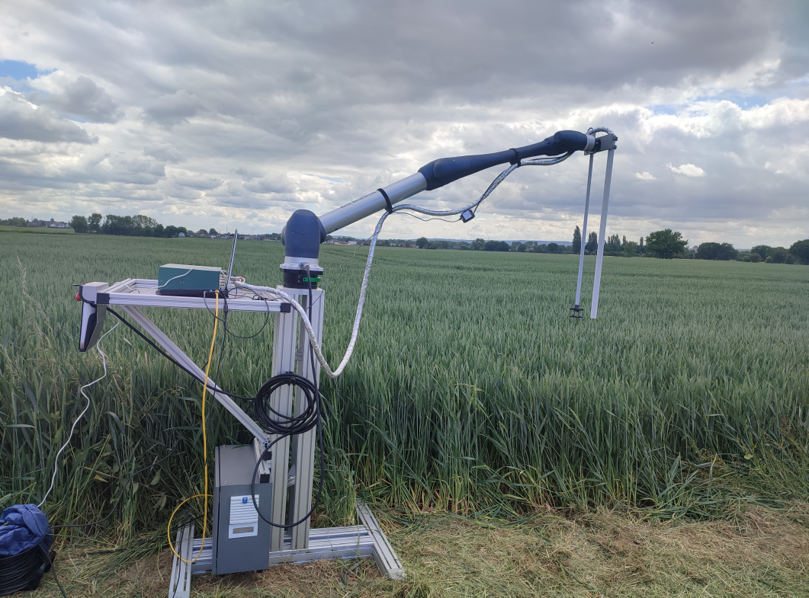

ENSEEIHT e-Portfolio
Mobilité Internationale
Engagement ▾
Développement de Carrière ▾
EN

Présentation du stage
Missions et travaux réalisés
Bilan et compétences acquises
Télécharger le rapport de stage (PDF)